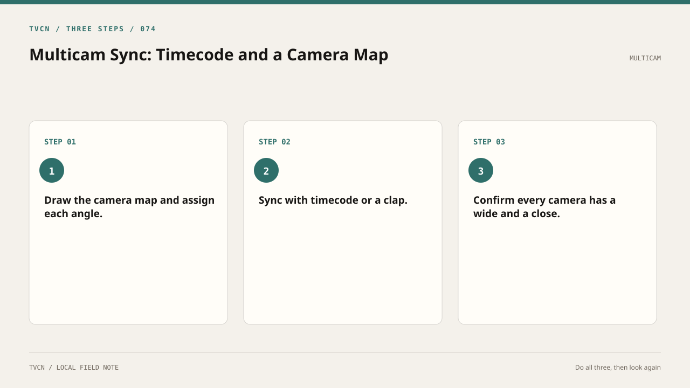

Unify the time base before multicam
With timecode, jam sync; without it, use a shared clap or flash. Every camera must see the same event and align by audio waveform; do not guess from picture.
Match frame rate, shutter, white balance and audio sample rate. Color can be matched later; mixed frame rates cannot sync losslessly.
Limits
Sync is not one-time. Long records drift; realign every twenty to thirty minutes, and use a timecode generator for critical scenes.
On set
Draw a top-down camera map and mark what A, B, and C cover. Sync by timecode or a clap; the editor uses the map to find the take.
Three-step flow

Do this
Multicam starts with a camera map, then timecode. The edit must know where each camera stood. Two cameras on the same size is repetition, not coverage.
- Draw a top-down map and label what size A, B, and C shoot.
- Sync by timecode or clap and confirm all three angles align.
- Check that each camera contributes different information, not the same size.
Avoid
Do not put two cameras on the same size; multicam is not duplicate cam.
Image note. Covers, diagrams and step images on this page are editorial illustrations or structure diagrams, not photographs of a test performed here; they are not evidence of measured gear performance. Where an image is AI-assisted, the caption says so. Read the test conditions in the text before treating an image as proof.